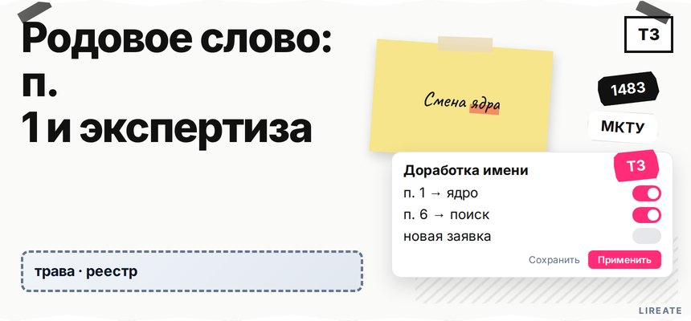
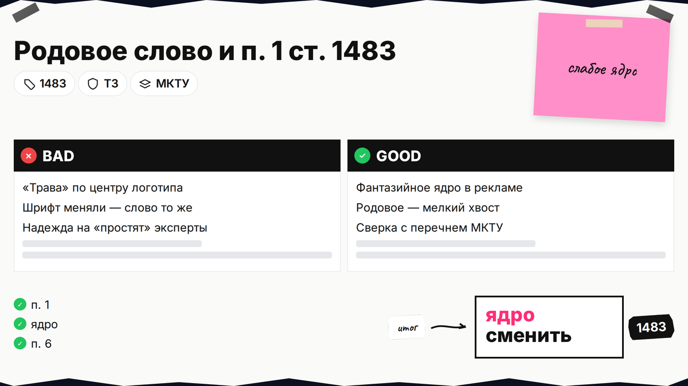
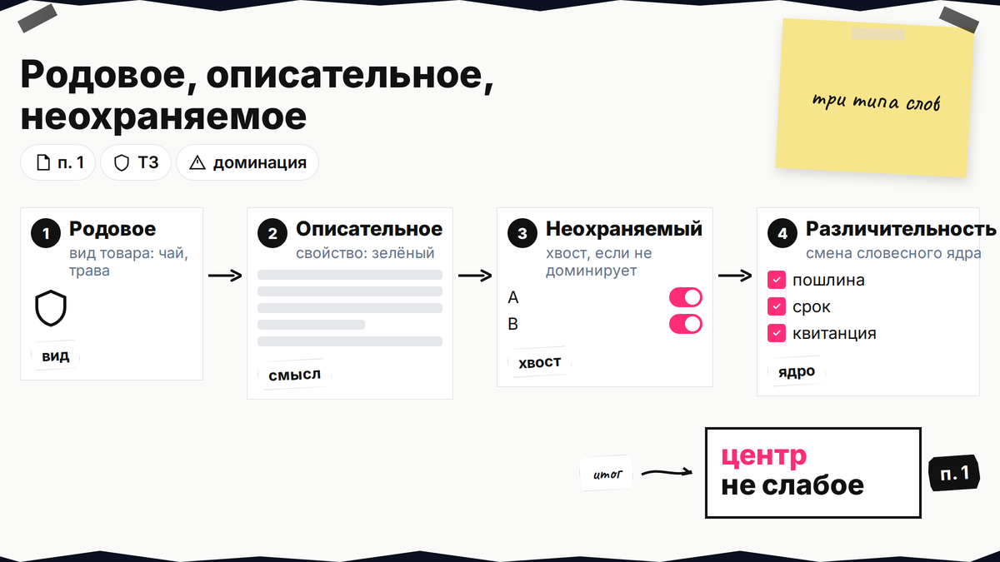
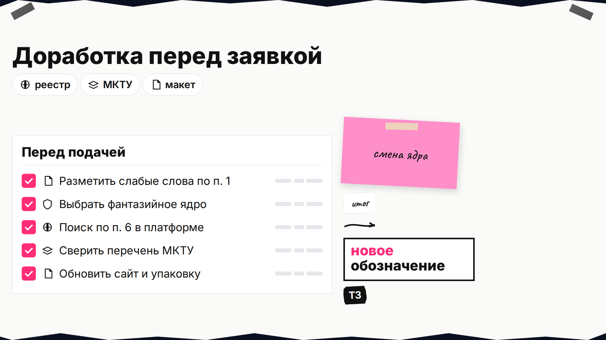

Маркетинг выбрал короткое имя с понятным ядром, предпроверка в реестре "загорелась", а экспертиза по существу упирается в слабое слово. Типичная ловушка: доработать название косметически и подать ту же суть снова. Ниже - как отделить риск по п. 1 ст. 1483 ГК РФ (описательность) от риска по п. 6 (сходство с чужими знаками), сменить доминирующий элемент имени и пройти экспертизу осознанно. 19.11.2026; не индивидуальная юридическая консультация.

TL;DR / Быстрый инсайт: Товарный знак - регистрация обозначения в Роспатенте на выбранные товары и услуги по перечню МКТУ (международный классификатор - список из 45 классов). По п. 1 ст. 1483 не регистрируют имя без различительной способности или состоящее только из родовых, описательных и иных "слабых" слов; такие элементы иногда оставляют неохраняемыми, если они не доминируют. Делайте: меняйте фонетически и смыслово доминирующее слово, сверяйте перечень через классы МКТУ, затем ищите сходство по п. 6 в Поисковой платформе. Не делайте: латиницу, дефисы и слова "магазин"/"натуральный" вместо смены ядра. Порядок "имя до макета" - в нейминге и логотипе; этапы экспертизы - в гайде по экспертизе.
Различительная способность - способность отличать ваш товар от чужих. Родовое слово называет категорию ("чай", "трава"), описательное прямо говорит о свойстве или составе. Экспертиза по существу (после формальной стадии) смотрит имя вместе с перечнем МКТУ (этапах формальной и содержательной экспертизы). Иные основания ст. 1483 (п. 2-5, 7-11) здесь не разбираем - только п. 1 и п. 6. Если имя ещё не согласовано с макетом, начните с нейминга и логотипа.

По п. 1 ст. 1483 не регистрируют обозначения без различительной способности или состоящие только из "слабых" элементов подп. 1)-4) (вид, качество, назначение и др.). Оценка идёт в привязке к перечню (tm-patent.ru). Видовое понятие в обороте (например, "термос" - справка к пп. 1 п. 1) показывает, насколько далеко может зайти обобщение.
Делайте: выпишите каждое слово имени и отметьте, указывает ли оно прямо на товар из вашего черновика перечня; для каждого слабого слова задайте два вопроса из практики описательности: понятен ли вид товара без домысливания и описывает ли слово свойство напрямую (onlinepatent.ru). Не делайте: надеяться, что экспертиза "простит" слово из-за красивого шрифта.
| Слово в имени | Риск по п. 1 для вашего перечня | Что менять в первую очередь |
|---|---|---|
| Родовое ("трава", "чай", "хлеб") | Высокий, если товар того же вида | Доминирующее ядро: фантазийный неологизм или произвольное слово |
| Описательное ("зелёный", "натуральный") | Высокий как характеристика | Убрать из центра, не "украшать" им слабое ядро |
| Фантазийное (вымышленный корень) | Ниже, но проверить транслит и смысл | Сохранить, если не сходно по п. 6 |

Неохраняемый элемент допускают, если слабая часть не доминирует (onlinepatent.ru). Исключение - приобретённая различительность (п. 1.1): долгая реклама и узнаваемость, но доказательства тяжёлые; чаще проще усилить имя. Делайте: меняйте словесное ядро, не только рисунок. Не делайте: оставлять крупное родовое слово в центре макета.
Имя "Трава" для травяного чая, БАДов или косметики: слово указывает на сырьё - риск п. 1. Ложные правки: "магазин", "натуральная", ТРАВА/TraVa, -shop (saenko-group.ru). Рабочие варианты без гарантии: неологизмы Травелла, Herbionis (вымышленные), ассоциативное ядро + мелкий родовой хвост (ipbot.ru). Не делайте: повторную заявку без смены доминирующего слова (pravo163.ru).

Приёмы: фантазийные слоги, замена слабого слова, слитное написание, иная структура фразы - меняется то, что слышат в рекламе.
| Стратегия | Когда уместна | Ограничение |
|---|---|---|
| Фантазийный неологизм | Родовое слово было центром имени | Снова проверить п. 6 и транслит |
| Родовое в неохраняемый хвост | Без него теряется смысл для потребителя | Хвост не доминирует по размеру и звучанию |
| Смена структуры фразы | Было описательное словосочетание | Не добавлять новые описательные слова |
Маршрут доработки:
Исходное имя → разметка слабых слов по п. 1 → 3-5 новых вариантов → поиск в реестре по п. 6 → выбор перечня МКТУ → обновление сайта и макета → новая заявка
Делайте: сверяйте классы при смене смысла имени в подборе МКТУ. Не делайте: расширять перечень "на все классы", чтобы обойти п. 1 - описательность смотрят в связке с заявленными товарами.
Антипаттерны: описательные хвосты ("премиум"), смена только алфавита, замена родового слова на другое описание ("чай" → "напиток"). Знак оценивают в целом (ezybrand.ru).
| Ложная доработка | Почему п. 1 снова сработает |
|---|---|
| ТРАВА / TraVa / trava | Тот же смысл и звучание для покупателя |
| "Натуральная трава", "Трава shop" | Добавлены новые описательные элементы |
| Только новый шрифт в логотипе | Словесное ядро не изменилось |
Делайте: фиксируйте старое и новое написание в таблице для команды. Не делайте: подавать повторно без существенной смены обозначения - замечания вернутся (saenko-group.ru).
П. 6 блокирует тождественные и сходные знаки для однородных товаров. Доработка по п. 1 не заменяет поиск: новое имя может остаться фонетически близким к чужому (фонетика, смысл, графика). Ищите в Поисковой платформе (кириллица, латиница, транслит); открытый реестр обновляется ежемесячно (см. чек-лист реестров ФИПС). Делайте: скрин к финальному варианту. Не делайте: игнорировать п. 6, если п. 1 "починили".
Узкий перечень не спасает слабое ядро. Подберите формулировки в классах МКТУ и совпадите текст на сайте с заявкой. Не делайте: "захватывать" лишние классы вместо переименования.
Обновите домен, маркетплейс и упаковку под новое словесное ядро до подачи - иначе экспертиза увидит расхождение с реальным обращением потребителей. Нужна помощь с перечнем, поиском и подачей - сопровождение на странице регистрации товарного знака; исход зависит от реестра и экспертизы, без обещаний регистрации.
Материал проверен: редакция Лирейт.
Достоверность: п. 1 и п. 6 ст. 1483 ГК РФ - по КонсультантПлюс (ред. 23.07.2025), процедура и тариф ФИПС - на 19.11.2026. Семантика спроса согласована с внутренней аналитикой Лирейт (ноябрь 2026).
Для однородного перечня - обычно нет по п. 1: слово описывает вид. Меняйте доминирующий элемент или готовьтесь к неохраняемой части; параллельно проверьте п. 6.
Здесь правится слово. Новый рисунок без смены слабого текста не снимает п. 1. Имя согласуйте раньше - нейминг и логотип.
Нет - это ещё одно описательное слово. Уберите или сместите родовое ядро.
Нет: смысл и звучание те же. Поищите транслит в Поисковой платформе.
Да. П. 6 отдельно; новое имя тоже может конфликтовать с реестром.
Иногда, если оно мелкое и не доминирует. Не ставьте родовое слово центром бренда.
При спорном словесном знаке в одном классе - до пошлин заявки (46 200 ₽, 15 раб. дней - ФИПС). Это ориентир, не гарантия.